ドロップシャドウの付け方
photoshop の強力な機能の一つに、
複数の画像を重ね合わせて編集する“レイヤー”というものがあります。
この使い方をドロップシャドウを題材にして練習してみましょう。
ドロップシャドウは文字や図形に影をつけて、
浮き出て見えるようにするテクニックです。
- まず、背景を "Background" のレイヤーに作ります。
このレイヤーは、画像を新規に作成するとき
"Transparent" 以外を選ぶと作られます。
このレイヤーは常に最下層にあり、
透明部分を作ることができません。
この例の背景のコントラストはちょっと弱いですが、
もう少しコントラストの強い画像の方が立体感を出しやすいかも知れません。
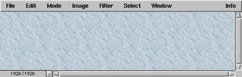
- この上に、透明なレイヤーを作ります。
"Layers" ウインドウの右上の、
右向き三角をクリックして "New Layer..." を選ぶか、
左下の紙をめくるようなボタンをクリックしてください。
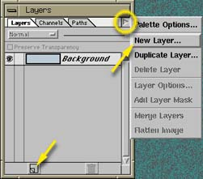
- 新規作成するレイヤーの名前や不透明度などを指定します。
このまま OK ボタンをクリックすればいいでしょう。
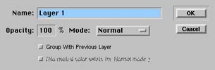
- "Background" の上に "Layer 1" ができます。
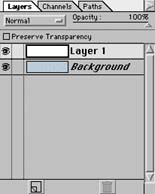
- "Layer 1" に描画します。
Layers ウィンドウで明るくなっている欄が編集対象のレイヤーです。
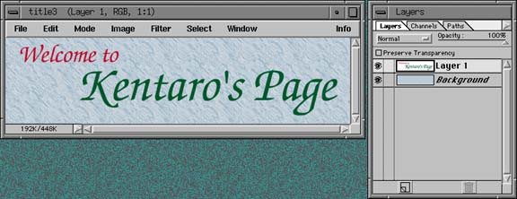
- "Layer 1" の複製を作ります。
Layers ウィンドウの三角マークから "Duplicate Layer..." を選ぶか、
"Layer 1" の欄をドラッグして、
左下の紙をめくっているようなアイコンに重ねてください
（このアイコンの右のゴミ箱のアイコンにドラッグすると、
そのレイヤーが削除されます）。
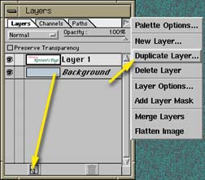
- 複製したレイヤーに付ける名前などを指定します。
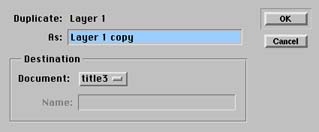
- "Layer 1" の上に "Layer 1 copy" が重なります。
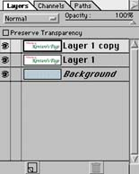
- "Layer 1" と "Layer 1 copy" は同じ内容なので、
描画ウィンドウの表示はほとんど変化しないと思います。
そこで、これを黒色にしてしまいます。
色の変更にはいくつかの方法がありますが、
ここでは“２値化”という方法を用います。
メニューバーの "Image" から、
"Map" → "Threshold..." という順にメニューを選んでください。
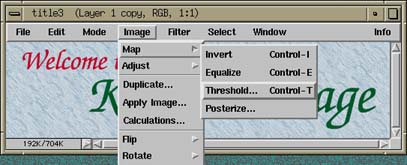
- ウィンドウの下側の小さな三角を一番右にドラッグするか、
"Threshold Level:" を 255 に設定してください。
そのあと OK のボタンをクリックしてください。
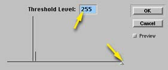
- "Layer 1 copy" の字が黒くなります。
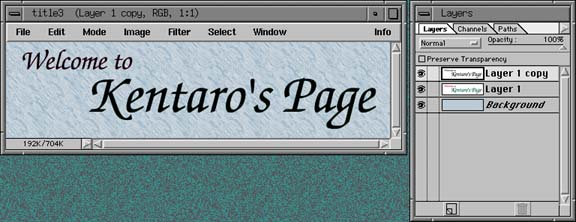
- レイヤーの順序を変更します。
"Layer 1 copy" の欄を、
"Layer 1" と "Backtround" の間にドラッグしてください。
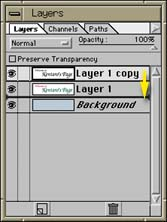
- "Layer 1" が一番上に来たので、
黒くなった "Layer 1 copy" は隠れます。
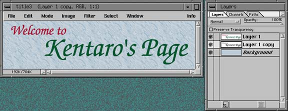
- "Layer 1 copy" を、移動ツールを使って少し右下にずらします。
これで影ができます。
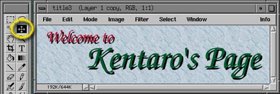
- 影がちょっと黒すぎるので、
"Layer 1 copy" の不透明度を下げてみます。
Layers ウィンドウの右上の "Opacity" の小さな三角を左に動かしてください。
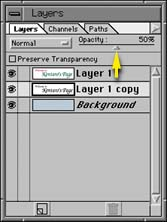
- ドロップシャドウをソフトシャドウにしてみましょう。
影の "Layer 1 copy" のレイヤーを選択して、
メニューバーの "Filter" から
"Blur（ぼかし）" → "Gaussian Blur..." という順にメニューを選んでください。
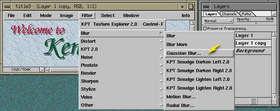
- 下の小さな三角をドラッグして、
ぼかしの半径を変化させてみてください。
気に入ったところで OK のボタンをクリックしてください。
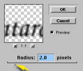
- これでソフトなドロップシャドウができました。
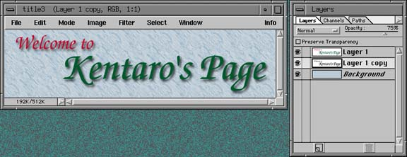
- この画像は３枚の画像の重ねあわせですから、
最後にこれをまとめてしまいます（フラット化、画像の統合）。
Layers ウィンドウの三角マークから、
"Flatten Image" を選んでください。
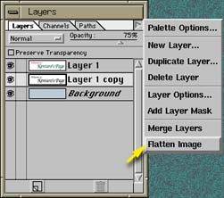
- 画像が統合されて、ひとつの "Background" レイヤーになりました。
このあと、このファイルを保存してください
（フラット化しないと photoshop 形式以外の画像フォーマットでは保存できません）。
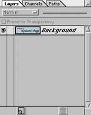
- 余談ですが、フラット化する前に "Background" に対して、
“ページカール”を付けたりしても楽しいでしょう。
これはメニューバーの "Filter" から "Distort" → "KPT Page Curl 2.0"
という順にメニューを選んでください。
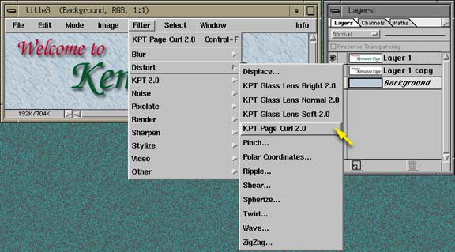
- こんな具合いになります。
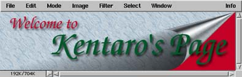
これ以外にも、
レンズ効果とかいろいろおもしろいフィルタがあるので、
試してみてください。
- フラット化した画像に対して、
レンズフレア（逆光）効果やライティング（照明）効果を付けても、
楽しいんじゃないかと思います。
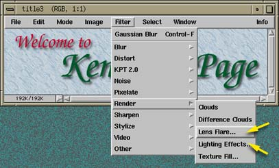
- レンズフレア効果の場合は、
光源の位置とレンズの焦点距離を指定した後、
OK のボタンをクリックしてください。
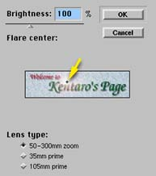
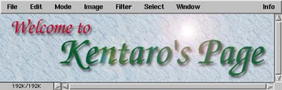
- ライティング効果の場合は、
照明のタイプや光の広がり方、方向などを指定します。
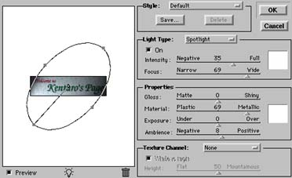
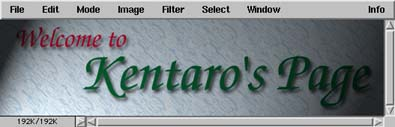
（この例は、
ドロップシャドウの位置と照明の方向が一致していないので、
ちょっと変な感じになってしまいました）
こんな風に、photoshop には、
ある効果を実現するための様々なテクニックやノウハウがあります。
そういうものを自分で編み出していくのもひとつの道ですが、
巷には他の人が考えたテクニックをまとめた本がたくさん出ていますから、
そういうものを参考にした方が早道でしょう。